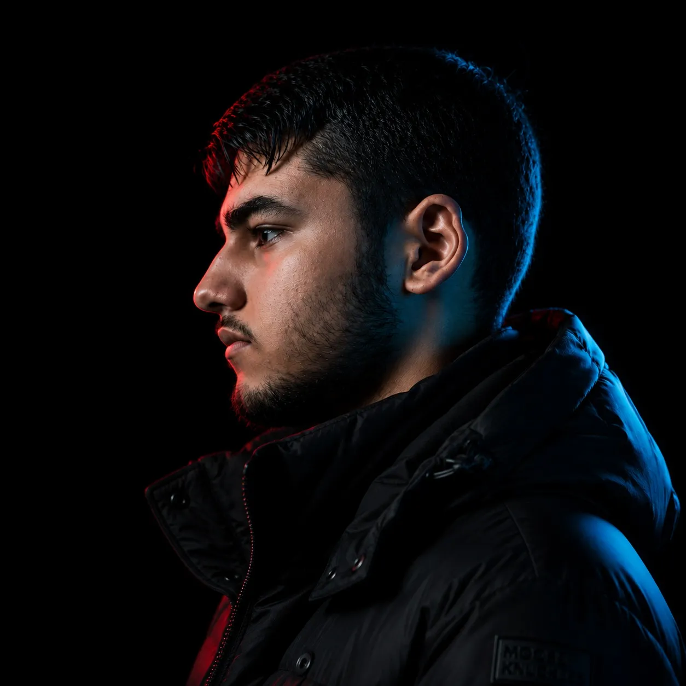

مسیحا فوران یک هنرمند مستقل در سبک آراندبی و رپ است
تمامی مراحل نوشتن، اجرا
ضبط و میکس و مسترینگ آثار توسط
خود مسیحا فوران انجام میشود
هدف او خلق هویتی مستقل و ارائه موسیقیای
صادقانه و متفاوت برای مخاطبان است
🎧 Hip-Hop / Rap / R&B
📍 ایران
.این وبسایت شخصی و متعلق به فوران میباشد